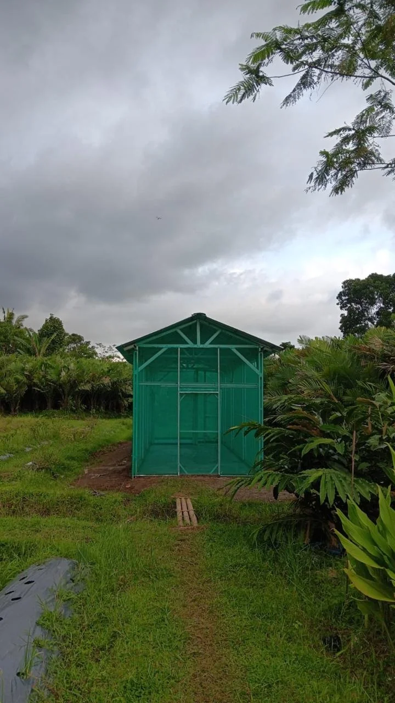
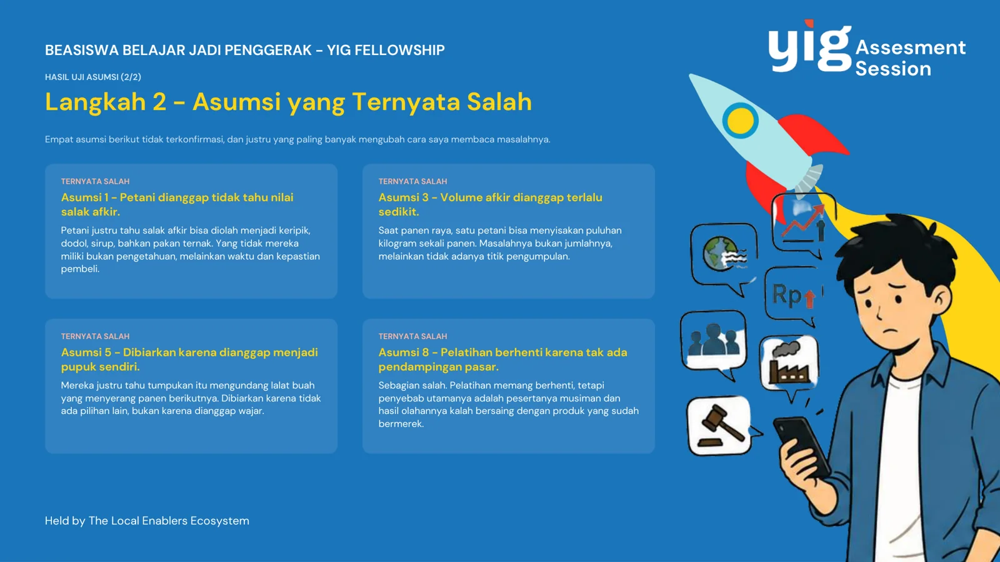
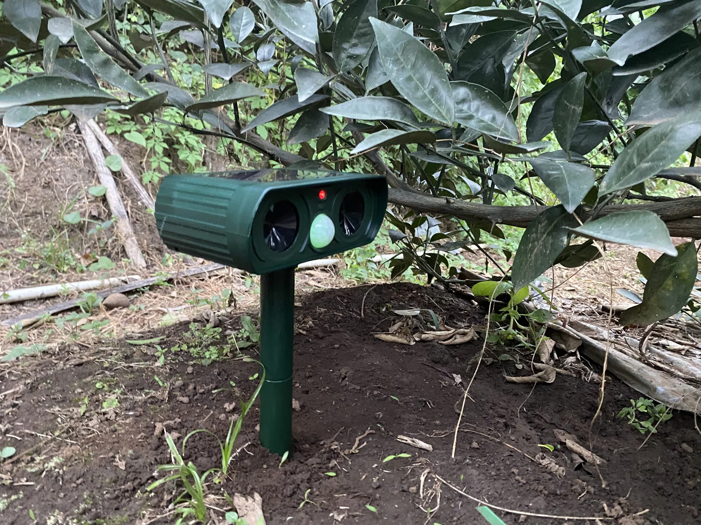

Saya Les' Aullian Achmad Argito. Saya membawa pengalaman memimpin program komunitas, menguji kebutuhan lapangan, dan mendampingi penerapan teknologi pertanian.
Lulusan Teknik Pertanian Universitas Gadjah Mada, dengan pengalaman pada program komunitas dan penelitian. Saya bersedia ditempatkan di site Kalimantan Tengah serta melakukan perjalanan lapangan.
Kontribusi yang saya tawarkan: perencanaan kegiatan, komunikasi dengan mitra, dokumentasi, pengolahan data, dan tindak lanjut yang teratur. Pengalaman CSR pertambangan dan evaluasi dampak formal menjadi bidang pengembangan berikutnya.
PENGALAMAN YANG RELEVAN
Tiga konteks. Satu cara bekerja.
Memahami masalah, melibatkan mitra, dan menjaga informasi kegiatan agar dapat ditelusuri.

01 / KETUA PROGRAM · OKTOBER 2025–SEKARANG
EcoMaggot Village
Program pemanfaatan salak afkir melalui budidaya black soldier fly di Wonokerto. Tim UGM memperoleh peringkat ketiga kategori Sustainable Village dan hibah implementasi Rp100 juta melalui PLN SustainAction 2025.
Memimpin tim enam orang dalam penyiapan proposal, rencana kerja dan koordinasi pelaksanaan.
Berkoordinasi dengan Pemerintah Kalurahan Wonokerto, KWT Gambang Lestari dan Kelompok Tani Kembang Mulyo.
Pembangunan fasilitas berlangsung November 2025–Mei 2026.
Peran, bukti dan status hasil
Sertifikat program atas nama UGM dibaca bersama surat fakultas dan daftar tim. RAB disusun bersama tim, dengan berkas oleh wakil ketua. Target 75 penerima manfaat, 5 ton limbah/tahun, dan pengurangan biaya pakan 30–40% belum dinyatakan sebagai dampak terukur.

02 / PESERTA INKUBASI · AGUSTUS–SEPTEMBER 2026
Young Impact Generator
Wawancara satu petani pada 5 Agustus 2026 menguji delapan asumsi tentang salak afkir. Empat didukung, sementara empat lainnya tidak atau hanya sebagian didukung.
Mengidentifikasi kendala pengumpulan, penampung, kapasitas pengolahan dan koordinasi.
Merevisi usulan menuju titik pengumpulan serta akses pembeli yang lebih pasti.
Mempelajari pentingnya menyesuaikan solusi dengan keterangan pihak yang terdampak.
Lingkup asesmen
Temuan berasal dari satu wawancara dan tidak mewakili seluruh petani. Usulan merupakan keluaran pembelajaran; belum menjadi bukti pasar terbentuk atau pendapatan meningkat. Nama narasumber disamarkan pada cuplikan publik.

03 / PIC KEGIATAN · JUNI–AGUSTUS 2025
KKN-PPM UGM
Pendampingan teknologi dan layanan desa di Tegalweru serta Kucur, Malang. Laporan individu mencatat 43 dari 79 kegiatan dengan peran PIC, mencakup 220 jam.
Mendampingi penggunaan dan pemeliharaan alat pengusir hama ultrasonik yang dibeli untuk kegiatan.
Mendukung kegiatan bantuan beras yang melibatkan 160 warga melalui pemeriksaan dokumen dan konfirmasi RT/RW.
Menggunakan panduan visual dan penjelasan praktis untuk mendukung pemeliharaan teknologi.
Kegiatan dan pengukuran manfaat
43 kegiatan bukan 43 program mandiri. Foto alat dan narasi kegiatan belum membuktikan penurunan hama, penghematan air atau peningkatan produktivitas. Rancangan irigasi diberi label sebagai gambar desain.
ARSIP PROYEK ASLI
Catatan lapangan, dalam gambar.
16 foto, cuplikan dokumen dan gambar rancangan. Tekan gambar untuk memperbesar dan membaca konteksnya.
CONTOH RANCANGAN KERJA
Dari kebutuhan ke tindak lanjut.
Kerangka yang saya usulkan untuk diskusi dengan tim CSR. Ini contoh kerja, belum diterapkan atau disahkan PT Singaraja Putra Tbk.
Dokumentasi yang membantu keputusan.
Contoh kolom tindak lanjut: isu · sumber/tanggal · tindakan · PIC · tenggat · status · bukti penyelesaian.
Bedakan rencana, keluaran yang telah terlaksana, hasil yang benar-benar diukur, dan data yang masih perlu dikumpulkan. Evaluasi dampak memerlukan rancangan dan data yang memadai.
Sertifikat peringkat ketiga UGM, surat fakultas dan daftar tim mendukung atribusi peran. Proposal memuat rencana program; arsip foto menunjukkan keluaran fisik. Dokumen lengkap disiapkan untuk lampiran lamaran.
Young Impact Generator
Sertifikat 016/YIG/10/2026 mendukung keikutsertaan pada inkubasi Agustus–September 2026. Asesmen enam halaman memuat asumsi, keterangan narasumber dan revisi usulan.
KKN-PPM UGM
Laporan individu, logbook dan arsip foto mendukung kegiatan pendampingan serta layanan desa. Cuplikan publik tidak menyertakan daftar identitas warga.
Ruang belajar selanjutnya
Pengalaman saya berasal dari program komunitas, kegiatan mahasiswa dan penelitian. Saya belum bekerja sebagai staf CSR pertambangan atau melaksanakan evaluasi dampak formal, SROI maupun IKM secara profesional.